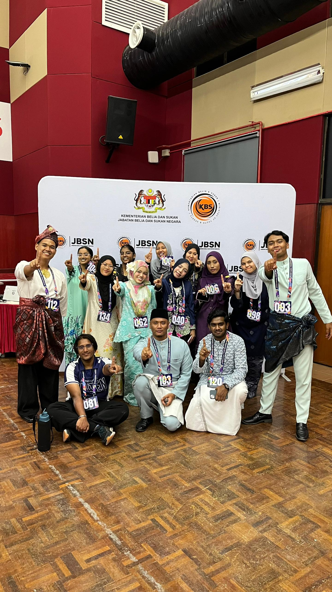
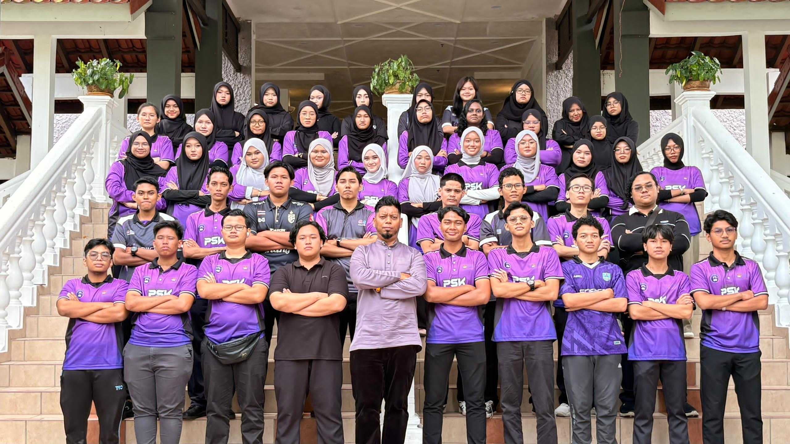
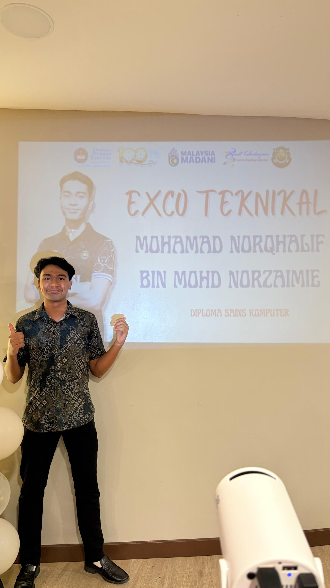
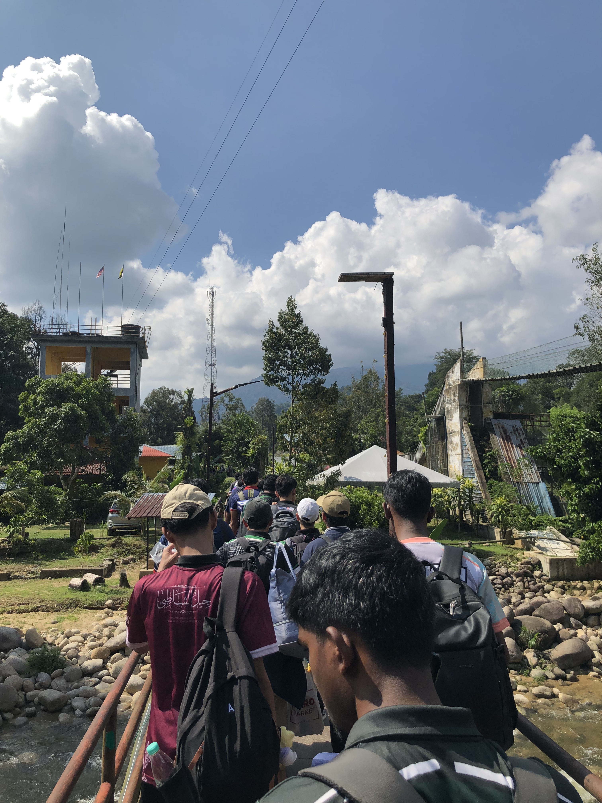
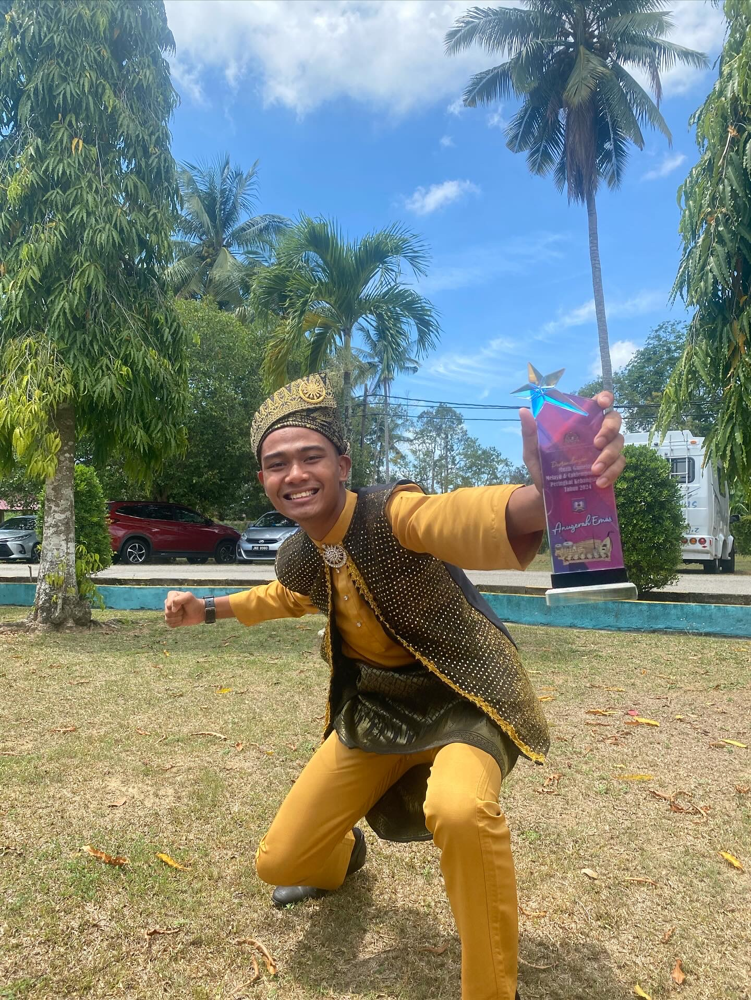

Experiences, recognitions and leadership opportunities that have shaped my personal and professional growth.

Selected among approximately 18,000 applicants to advance into the national selection camp with only around 140 participants. This experience strengthened my confidence, communication, leadership potential and global perspective.

Leading academic, professional and community-focused programmes for Computer Science students while coordinating committees, activities and student engagement initiatives.

Responsible for technical operations during club programmes, including equipment preparation, sound systems, stage setup and technical support.

Contributed to event documentation, photography, videography, social media content and promotional materials for university volunteer programmes under BHEP. Actively involved in documenting Minggu Intelektual dan Interaksi Anak Kandung Suluh Budiman for new students.

Received Gold Award after months of training, team coordination and performance preparation. This achievement reflects dedication, discipline, collaboration and appreciation for Malaysian traditional performing arts.
My achievements reflect more than awards alone. They represent years of involvement in leadership, volunteerism, technical responsibilities, creative projects and personal development. Every role has contributed valuable skills in communication, teamwork, organisation and problem solving.